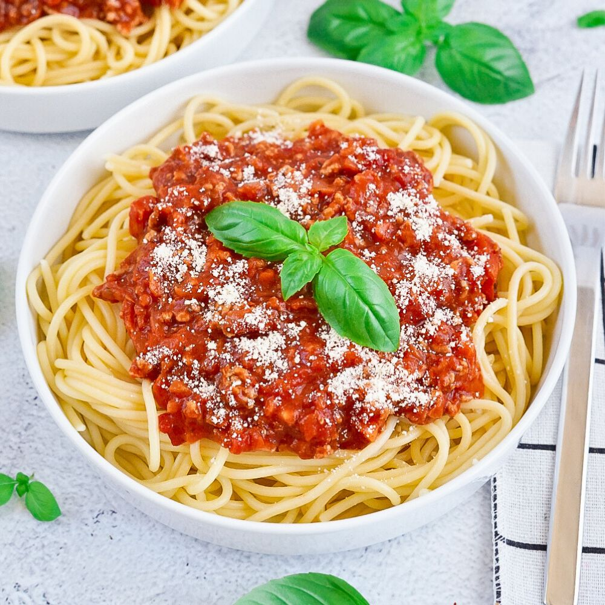

A classic Italian pasta dish with rich, savory meat sauce

Prep Time
15 minutes
Cook Time
45 minutes
Servings
4 people
Difficulty
Easy
Ingredients
400g spaghetti
500g ground beef
1 onion, finely chopped
2 cloves garlic, minced
2 carrots, finely diced
2 celery stalks, finely diced
400g canned crushed tomatoes
2 tbsp tomato paste
1 cup beef broth
1/2 cup red wine (optional)
2 tbsp olive oil
1 tsp dried oregano
1 tsp dried basil
Salt and pepper to taste
Freshly grated Parmesan cheese for serving
Instructions
Prepare the sauce: Heat olive oil in a large pot over medium heat. Add the chopped onion and cook until translucent, about 5 minutes.
Add vegetables: Add the minced garlic, diced carrots, and celery. Cook for another 5 minutes until vegetables begin to soften.
Brown the meat: Add the ground beef and cook, breaking it up with a wooden spoon, until browned and no longer pink, about 8-10 minutes.
Add tomatoes and seasonings: Stir in the crushed tomatoes, tomato paste, beef broth, red wine (if using), oregano, and basil. Season with salt and pepper.
Simmer: Bring the sauce to a boil, then reduce heat to low and simmer uncovered for 30-40 minutes, stirring occasionally, until the sauce thickens and flavors meld together.
Cook pasta: While the sauce simmers, bring a large pot of salted water to boil. Cook spaghetti according to package directions until al dente (usually 8-10 minutes).
Combine and serve: Drain the pasta and add it to the sauce, tossing to combine. Serve hot with freshly grated Parmesan cheese on top.
Tips
For the best flavor, let the sauce simmer for at least 30 minutes to allow the flavors to develop.
You can make the sauce ahead of time and refrigerate it for up to 3 days or freeze for up to 3 months.
If you don't have red wine, you can substitute with additional beef broth.
For a vegetarian version, replace the ground beef with plant-based meat alternatives or lentils.